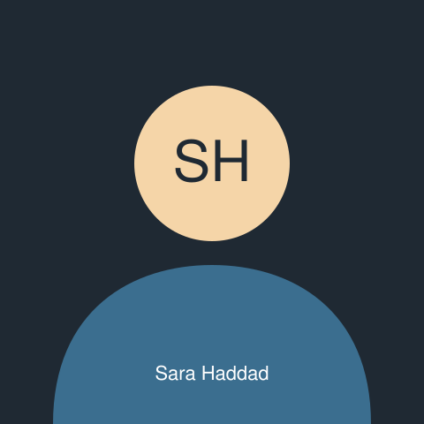
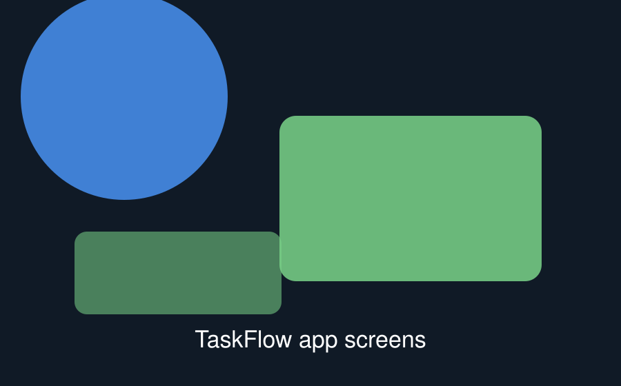

Front-end developer building accessible, standards-based interfaces.
Based in Amman, Jordan. Available for remote work across Europe and the Gulf.
About Sara

Sara at the Amman Web Meetup, March 2026.
I have spent four years building the kind of website that has to work
for everyone: library catalogues, university portals and government
forms. Those projects taught me that the markup is the
product — the design can be repainted, but a page built on
the wrong structure has to be rebuilt.
I start every feature with the document: headings, landmarks, labels,
then the styling. It is slower for about a day and faster for
every day after that.
Outside work I run the beginner track at the Amman Web Meetup, where
I teach HTML to about twenty people a month.
Experience
Front-End Developer, Cedar Digital
Amman, Jordan. 2023 to present.
Rebuilt the National Library catalogue front end. The new markup
passes WCAG 2.2 AA and cut page weight by 61%.
Introduced a markup review step to code review; accessibility
defects found after release dropped from 34 to 5 per quarter.
Mentored two junior developers through their first year.
Junior Developer, Bayt Labs
Amman, Jordan. 2021 to 2023.
Built and maintained eleven marketing sites.
Wrote the studio's shared HTML component library, still used on
every new project.
Projects
Three things I built outside client work.
TaskFlow

TaskFlow keeps a shift handover on one screen.
A handover tool for hospital shift changes. Nurses were passing notes
on paper; TaskFlow keeps the same information in one list that the
next shift can read on a phone at the ward door.
Lexicon shows a word's root alongside its meaning.
An Arabic–English dictionary for language students that searches by
root as well as by spelling, because that is how the dictionary on my
father's shelf works.
HTML, CSS, JavaScript
Bilingual interface with correct language attributes
Write down why, next to the code, for whoever comes after me.
Contact
I read every message and reply within two working days. Tell me what you
are building and I will tell you honestly whether I am the right person
for it.